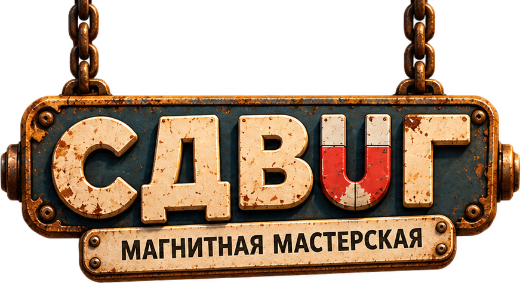
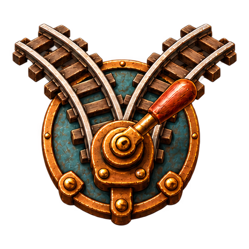
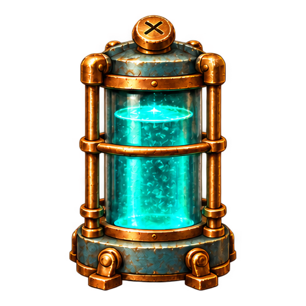
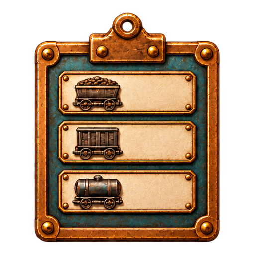
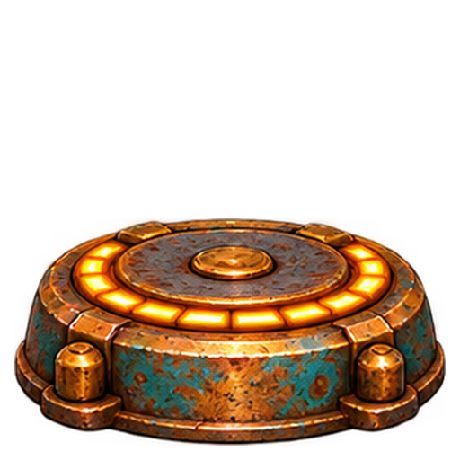
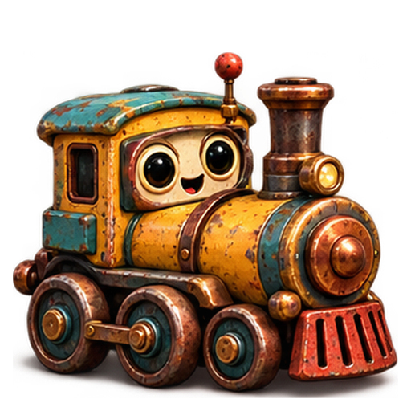
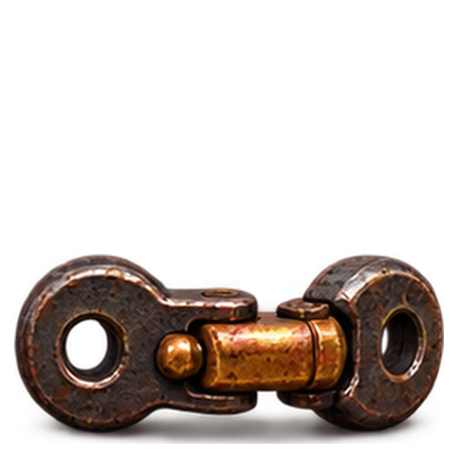
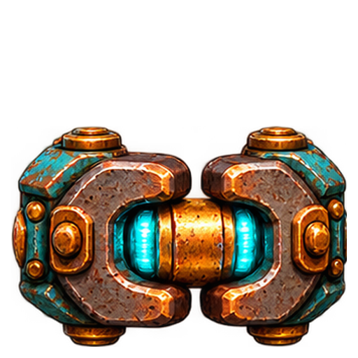
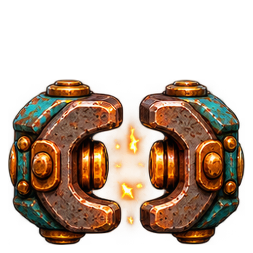
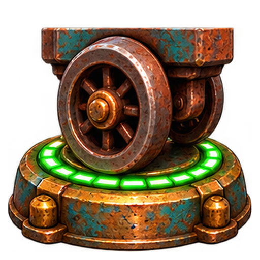

Буксир едет сам. Вагоны повторяют весь его путь, включая развилки.
Перед запуском выбери ветки и устройства. В заезде настройки заблокированы: можно остановиться, сделать один шаг или бесплатно вернуться к подготовке.
На станции разгружается только последний вагон подходящего цвета. Поэтому порядок вагонов и посещения станций важен.
Магнит снимает хвостовой вагон на боковую платформу. На платформе B вагон удерживает ворота. Сцепка подбирает уже оставленный вагон, когда до неё дошёл хвост; одиночный буксир тоже может подобрать вагон.



«Чередовать» меняет ветку для следующего круга, когда развилку освободил весь состав. Подсветка показывает ближайшие 8 шагов того же плана, по которому едет поезд.
С 9-го участка учитывается запас хода: одна клетка расходует один заряд. Последние участки вводят заказ: станции принимают вагоны строго по номерам, следующая станция подсвечена. Пропущенный вагон остаётся в составе до своей очереди.
Пробел — запуск или пауза, стрелка вправо — шаг, R — к настройке. Все 25 участков открыты. «План-пример» выставляет проверенную конфигурацию.